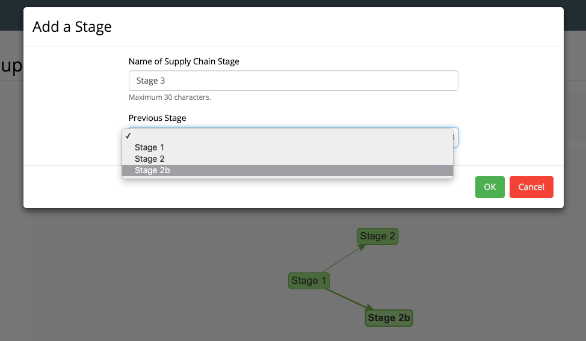
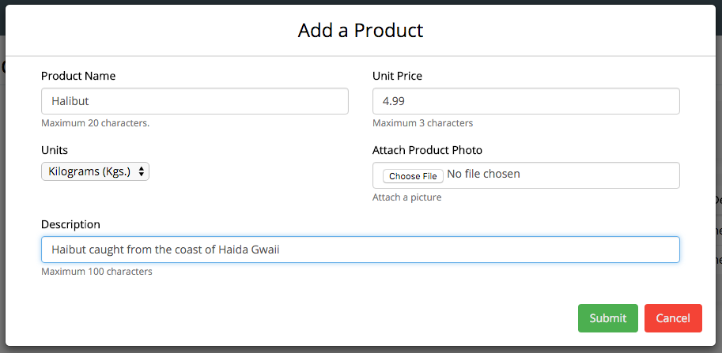
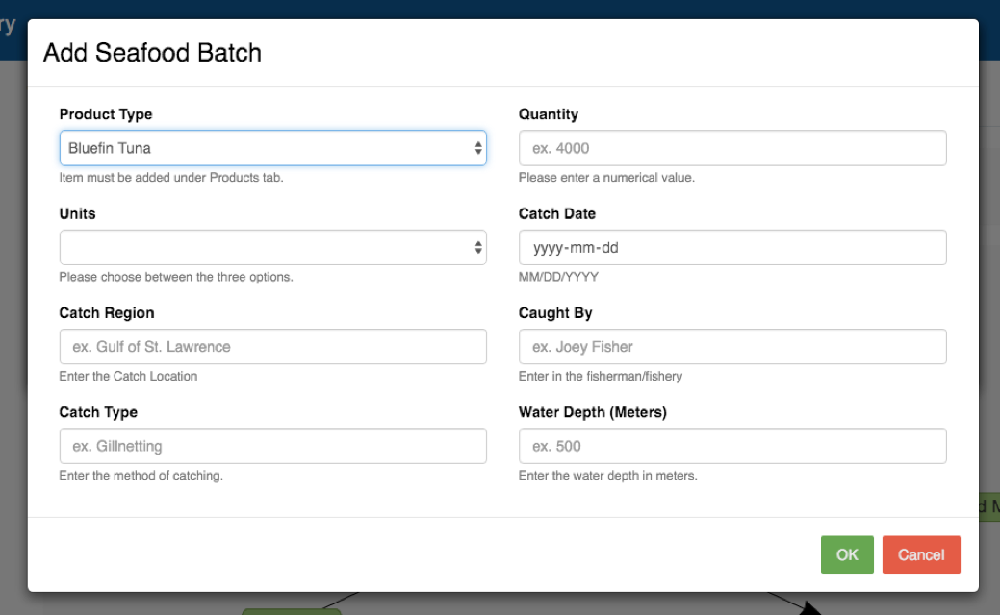
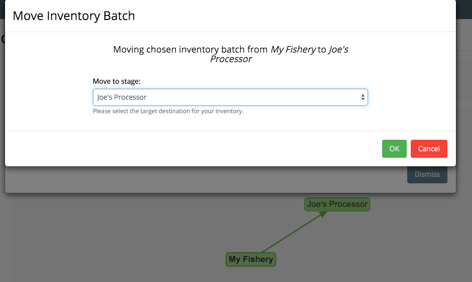
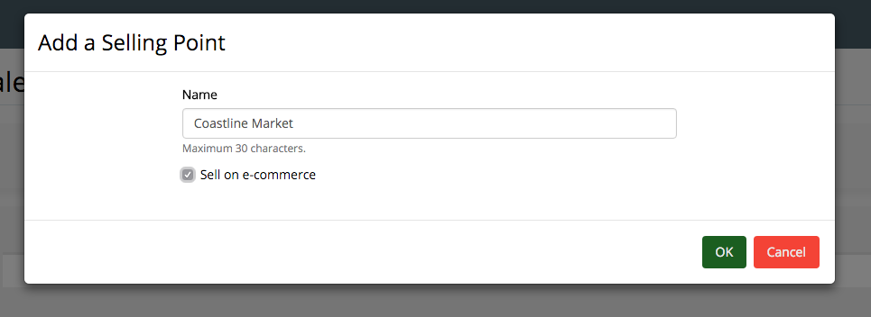

Coastline Quick Start Guide
Creating a supply Chain
1. Click the Supply Chain tab
2. Click the Create Supply Chain button and give it a name
3. Click the Add button to add the first intermediary in your supply chain
4. Name your first intermediary, and press the green OK button
5. Repeat steps (3) and (4), and choose the source intermediary from the
Previous Stage Dropdown
6. Click Save

Adding a Prodct
1. Click the Products tab
2. Click the Add Product button
3. Fill out the info & Click Submit

Adding an Inventory Batch
1. Click the Inventory tab
2. Choose your desired supply chain by clicking View/Edit
3. From the visual supply chain, click the intermediary you'd like to add the batch to
4. Once the destination is highlighted, click View/Edit Inventory
5. Click the Add button
6. Fill out the info & Click OK

Moving Your Inventory
1. Click the Inventory tab
2. Choose your desired supply chain by clicking View/Edit
3. From the visual supply chain, click the source intermediary
4. Once the destination is highlighted, click View/Edit Inventory
5. Choose desired inventory batch
6. Click the Move button
7. From the Move to Stage dropdown, click target intermediary
5. Click the OK button

Creating a Selling Point
1. Click the Sales Channels tab
2. Choose your desired supply chain by clicking View/Edit
3. Click Add Sales Channel
4. Enter your desired Selling Point Name
[OPTIONAL]: Check Sell on e-commerce to upload product to Coastline Market Shop
5. Click the Ok button

Traceability from Catch to Consumer
1. Click the Inventory tab
2. Choose your desired supply chain by clicking View/Edit
3. Click the source intermediary
4. You'll be presented with all the inventory batches in that intermediary
5. Choose desired inventory batch you would like to trace
6. Click the View Details button
7. The new window will display the historical data of the fish, along with its catcher and origin